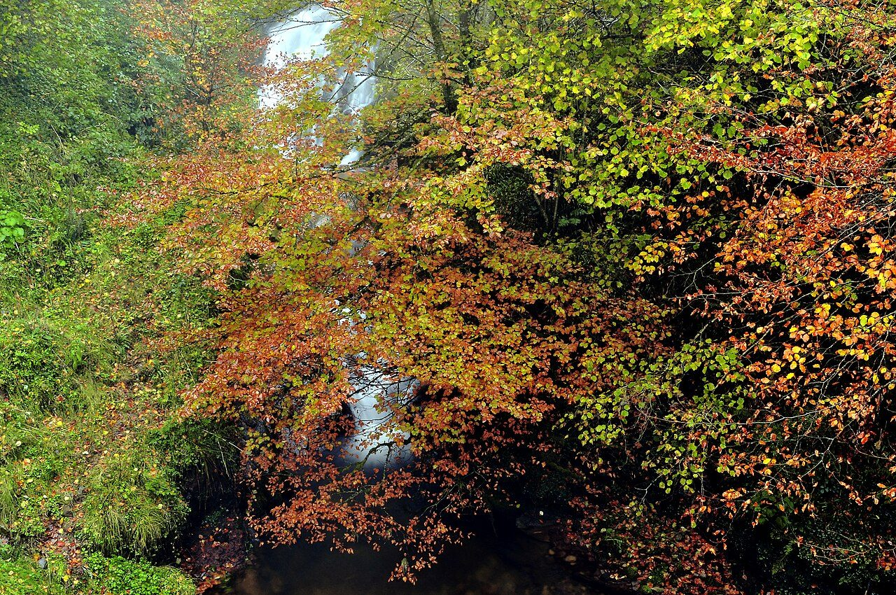
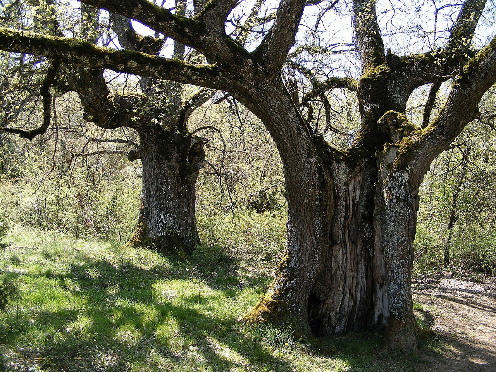
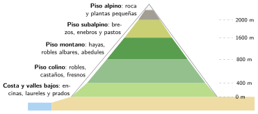

Bosques autóctonos: robledales, hayedos y encinares
Criterios: PN 1.1, PN 5.1
🤔 Pienso5 min
Qué hago aquí: Piensa un momento y contesta con lo que ya sabes. No pasa nada si no lo sabes: es para empezar.
En muchos montes de Cantabria hay eucaliptos y pinos plantados en filas. ¿Crees que son árboles de aquí? ¿Cómo lo podrías saber?
📖 Leo y aprendo15 min
Qué hago aquí: Lee despacio, mira los dibujos y los ejemplos, y quédate con la idea clave del final.
Una especie autóctona es la que vive aquí de forma natural. Una especie alóctona la ha traído el ser humano desde otro lugar: el eucalipto vino de Australia y el pino de Monterrey, de California. Los bosques autóctonos de Cantabria son tres:

Foto: LBM1948 · CC BY-SA 4.0 · Saja-Besaya, otoño 1.jpg

Foto: Carlos González Sanz · CC BY-SA 4.0 · Robledal en la vertiente norte de la sierra de Codés.jpg
Los bosques se reparten por pisos según la altura, porque al subir hace más frío:

✏️ Hago25 min
Qué hago aquí: Haz las actividades en orden. Empieza siempre por las básicas.
Define especie autóctona y alóctona y clasifica estos árboles. ¿Cómo podrías averiguar el origen de una especie dudosa?
Elige el grupo de cada uno.
Completa una tabla de los tres bosques autóctonos con: árbol, altitud, condiciones de clima, rasgo característico y un ejemplo en Cantabria.
Explica por qué los bosques se reparten en pisos según la altura. Si subes desde Potes hasta las cumbres, ¿en qué orden encontrarás encinar, robledal, hayedo y pastos?
El encinar cantábrico se considera un «bosque relicto». Explica qué significa y qué nos dice sobre el clima del pasado.
Compara un hayedo y una plantación de eucaliptos: biodiversidad, suelo, riesgo de incendio, uso económico. ¿Por qué se plantaron eucaliptos? ¿Qué propondrías para equilibrar economía y patrimonio natural?
En un hayedo casi no crecen plantas en el suelo. Explica la causa y qué consecuencia tiene para los animales que viven en él.
Dibuja una montaña de Liébana con los pisos de vegetación, indicando la altitud aproximada de cada uno y una especie de árbol.
✏️ Puedes responder escribiendo, con un dibujo o un esquema, o contándolo en voz alta.
🚀 Amplío (si quieres saber más)
Qué hago aquí: ¿Has terminado? Lee la curiosidad o elige el reto. Es voluntario.
Investiga el Monte Hijedo o el Monte Aa: superficie, especies de árboles, fauna y figura de protección. Escribe un artículo de 10 líneas para la revista del colegio explicando por qué es patrimonio y qué amenazas tiene.
✅ Compruebo5 min
Qué hago aquí: Contesta sin mirar la ficha y marca cómo lo llevas.